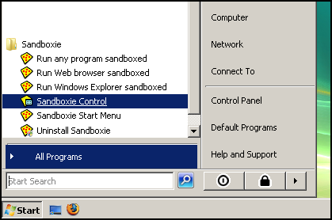

Getting Started
Part One: Introduction
Sandboxie runs your applications in an isolated abstraction area called a sandbox. Under the supervision of Sandboxie, an application operates normally and at full speed, but can't effect permanent changes to your computer. Instead, the changes are effected only in the sandbox.
This Getting Started tutorial will show you:
- How to to use Sandboxie to run your applications
- How the changes are trapped in the sandbox
- How to recover important files and documents out of the sandbox
- How to delete the sandbox
Or skip ahead to Getting Started Part Six which discusses a few final points.
You can also review the External Tutorials page for more links to tutorials about Sandboxie, some in languages other than English, others are in video form rather than text.
Sandboxie Control
Sandboxie is operated primarily through the Sandboxie Control program. This program adds the yellow Sandboxie icon to the system notification ("tray") area of your taskbar:

If Sandboxie Control is not already active, you can find it and launch it from the Sandboxie program group in your Windows Start menu:

When active, you can use the Sandboxie tray icon to hide and show the main window of Sandboxie Control, by double-clicking the icon. Or, you can right-click the icon and select the first command, which alternates between Hide Window and Show Window.
For this tutorial, make sure the main window of Sandboxie Control is visible.
You should view this tutorial in a sandboxed Web browser. To do that, use the Getting Started Tutorial (Web) command in the Help Menu of Sandboxie Control, and make sure you tell Sandboxie Control to run your browser sandboxed:

The tutorial continues in Getting Started Part Two.